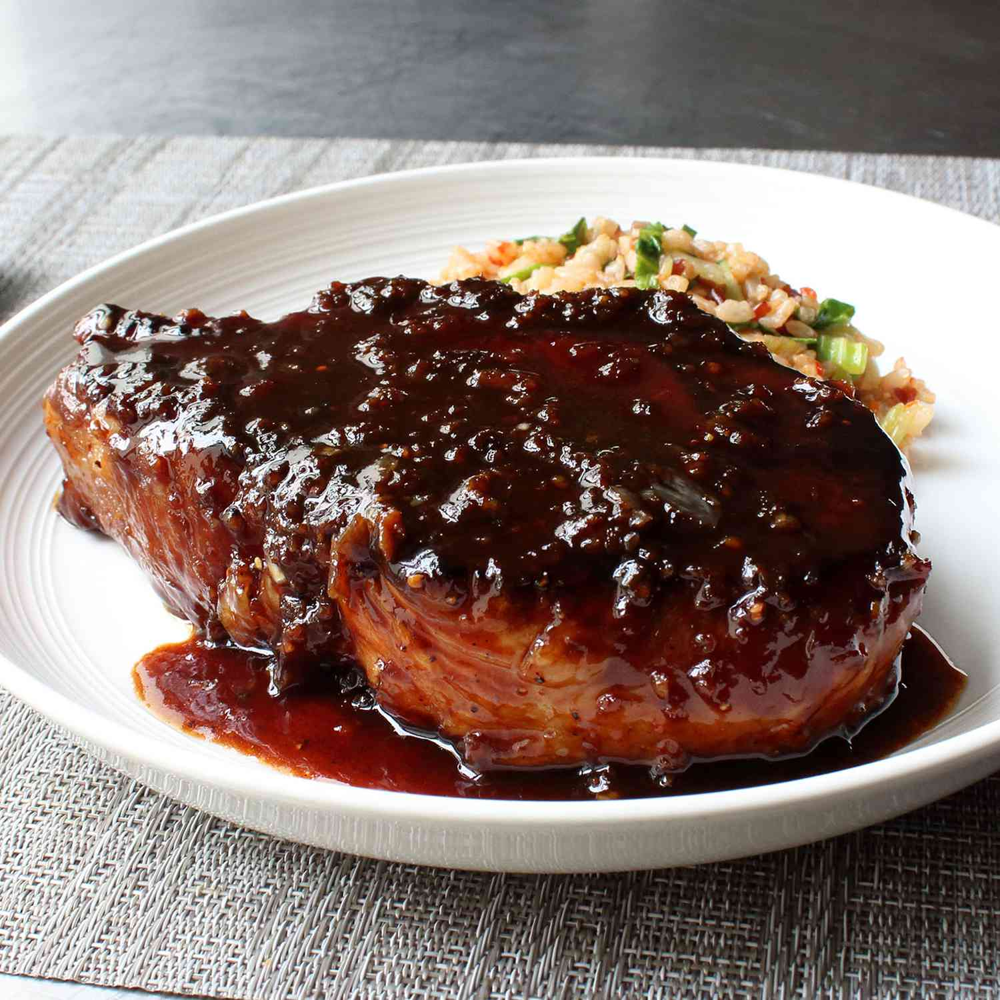

Garlic Porkchops

Description
With simple ingredients and just a few minutes of prep you will have a delicious start to an amazing dinner
This recipe will require 1 hour and 30 minutes and serves 2 porkchops
Ingredients
- ⅓ cup light brown sugar
- 6 cloves garlic, crushed, or more to taste
- ¼ cup rice vinegar
- 2 tablespoons fish sauce
- 1 tablespoon soy sauce
- 1 tablespoon ketchup
- ½ teaspoon freshly ground black pepper
- 2 teaspoons hot sauce, or to taste
- 2 (10 ounce) thick-cut bone-in porkchops
- 1 teaspoon vegetable oil
Steps
- Combine brown sugar, garlic, rice vinegar, and fish sauce in a bowl for the marinade. Add a splash of soy sauce and a plop of ketchup. Finish off with black pepper and hot sauce.
- Pour 1/2 of the marinade into a baking dish and lay pork chops over marinade. Pour the remaining marinade on top and toss pork chops until well coated. Wrap with plastic wrap and marinate in the refrigerator, flipping chops every 30 minutes, 1 to 2 hours.
- Remove chops to a plate, scraping any excess marinade back into the baking dish.
- Heat oil in a nonstick skillet over medium heat. Place chops in the hot oil. Cook until outsides are nicely charred and meat springs back when lightly prodded, about 5 minutes per side. Remove chops to a plate to rest.
- Pour the marinade into the skillet. Raise heat to medium-high. Cook until marinade is reduced and sticky, 3 to 5 minutes. Return pork chops and any accumulated juices to the skillet.
- Reduce heat to medium-low. Cook pork chops, flipping and basting occasionally, until the centers are slightly pink and sauce is to your desired degree of stickiness, 6 to 8 minutes. An instant-read thermometer inserted into the thickest part of the pork should read about 145 degrees F (63 degrees C).
- Plate each pork chop and spoon a portion of the sticky garlic sauce on top.